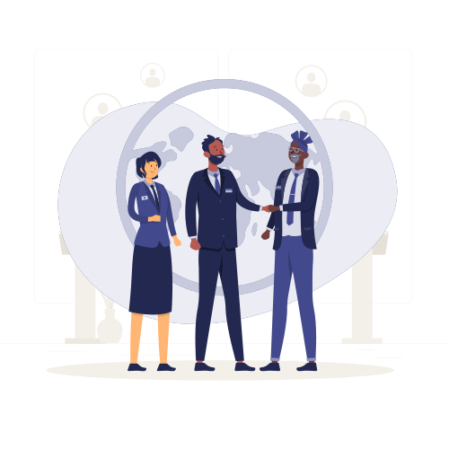

Engineering capacity, boosted by AI, delivered where your project needs it.
Consultim-IT has delivered Microsoft and custom engineering from Tunisia, with an office in France, for clients across Europe, the Gulf and Africa.
Every engineer here is boosted by AI
This is a standard part of how we staff and deliver. Our consultants work with AI assistance daily, code generation and review, test scaffolding, refactoring, migration scripting, data analysis and documentation.
For you, that shows up in three ways: more delivered capability per sprint at the same team size; documentation and tests that exist because producing them is no longer the expensive part; and engineers whose attention is on architecture, integration and business logic rather than boilerplate.
Architectural decisions, code review and accountability stay human. AI accelerates the work. It does not sign off on it.
More capability per sprint
The same team ships more, because the mechanical portion of engineering is no longer the bottleneck.
Documentation as standard
Architecture notes, runbooks and handover material produced alongside the build.
AI skills you can borrow
Teams that build agents, RAG and document intelligence for clients, available as extension capacity for your own AI roadmap.
Not an offshore supplier. A delivery partner.

A full working-day overlap
Tunisia sits in Central European Time: a complete shared working day with France, Germany, Switzerland and the Gulf.
Three delivery languages
We deliver in French, English and Arabic, including Arabic-capable trainers for end-user enablement, which matters on Gulf and North African programmes.
Demonstrated team scale
54 staff-months on a single national telecom engagement; 35 staff-months on an agri-food transformation. Sustained team delivery over the long term.
European delivery experience
Intranet and Microsoft 365 work delivered for clients in Germany, France and Switzerland, alongside institutional programmes in Africa and the Gulf.
Institutional discipline
Our teams have worked under development-bank, ministry and state-operator procurement rules, with the documentation, governance and reporting standards that implies.
Cloud, on-prem and hybrid
We deliver to Azure and public cloud, to client datacentres, and to Kubernetes and OpenShift clusters, including GPU infrastructure for on-premises AI workloads.
Four ways to engage
Team Extension
Our specialists join your existing team and work inside your delivery process.
Dedicated Team
A stable, named team working only on your roadmap.
Project Delivery
We take responsibility for scope, delivery and acceptance.
Managed Services / TMA
Ongoing corrective and evolutionary maintenance with defined commitments.
Roles we staff
- Solution architects
- Project managers (PMP, SAFe, Certified ScrumMaster)
- Team leaders and tech leads
- Microsoft 365 and SharePoint consultants
- Power Platform developers
- .NET / .NET Core engineers
- Angular, React and Flutter developers
- AI and data engineers
- Azure engineers and DevOps
- Migration specialists (Exchange, SharePoint, OneDrive)
- Cybersecurity and compliance consultants
- QA leads
- Microsoft Certified Trainers
- Change management practitioners (Prosci)
How we work
Delivery runs in sprints. Each sprint ends with a review where results are presented to the client for feedback, followed by a retrospective that evaluates practices and processes for the next iteration.
Coordination sessions run throughout to track progress and surface blockers early. Teams operate autonomously on assigned work while keeping the client continuously informed, which is what makes distributed delivery work in practice.
Commercial models. Fixed-price project delivery with defined scope and acceptance criteria · dedicated capacity at a monthly rate per profile, minimum three-month commitment · time and materials at a daily rate for evolving scope · managed services under an annual support contract with defined response and resolution commitments.
Where we have delivered
Tunisia · France · Germany · Switzerland · Côte d'Ivoire · Cameroon · United Arab Emirates · Oman